Mechatronics engineer: controls, embedded, mechanical and electrical, plus the
project management to deliver it. Specializing in energy-optimal control of hybrid electric
systems, on real robots and hardware.
I finish an M.S. in Engineering Technology at Texas A&M in December 2026, with
four years of engineering work behind it across industry, research and teaching.
My thesis is a hybrid battery and supercapacitor ground vehicle, where one predictive controller
solves three problems at once: where to go, what to avoid, and where the power comes from. Before
that I designed the end effector on a robotic
inspection cell that was published at an IEEE conference, helped build a 1,000 lb tracked electric
machine at TRACKS North America and designed its wireless operator controller, and managed the team at
BYRD Innovations that built a desktop robot for automatically repairing circuit boards.
Teaching product development to undergraduate engineers has added more project management experience,
and I spent five years with Aggie Robotics as vice president, then president, then as its graduate
advisor. I am looking for controls, robotics, automation or manufacturing engineering work in Texas,
starting January 2027.
Education
M.S. Engineering Technology (MSET), Thesis Option — Texas A&M University, Dec 2026GPA 3.5 / 4.0
Mechatronics Concentration · Minor, Embedded Systems Integration
Selected work
Graduate research · M.S. thesis
MARCO — Energy-Optimal Autonomous Ground EV
Graduate Research Assistant, Controls & Autonomy · Advised by Dr. Xingyong Song · Jan 2025 – Dec 2026
One predictive controller solving three problems at once: track the trajectory, avoid the obstacle,
and minimize energy across a hybrid storage bus. Predictive is the word doing the work. Because it
solves over a horizon, the power split is decided against the demand that is coming rather than the
one that already hit, and the supercapacitor takes the transient before the battery ever sees it. It
runs on the vehicle, and the loop is perception-bound rather than solver-bound.
Controller
MPC, trajectory and power split co-optimized in a single formulation
Validation
Simulation first, then closed-loop on the physical vehicle
Loop rate
15–20 Hz on hardware, perception-bound
Energy storage
Hybrid battery + supercapacitor, transient current buffering
Perception
4 × ZED 2i stereo pairs, VGA @ 15 Hz
Compute
NVIDIA Jetson Orin — custom CNN, GPU-accelerated PyTorch inference
Middleware
ROS 2 — camera, mapping, GPS, kinematic and power-draw telemetry
Localization
Centimeter-level GPS with sensor fusion
Comparison
Shares the vehicle and test conditions with a PhD candidate's offline reinforcement learning controller, so model-based and learned control can be compared directly
Thesis
Predictive Co-Optimization of Trajectory and Hybrid Power Split for Electric Ground Delivery Vehicle — in preparation, results pending
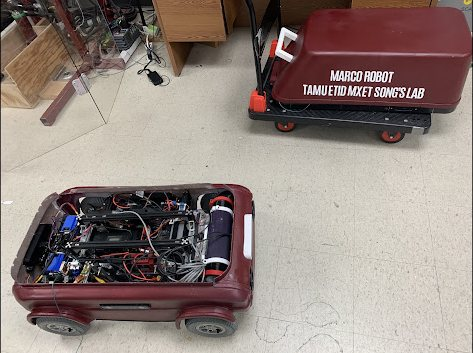
Fig. 01 — MARCO unit. The open chassis carries the hybrid battery and supercapacitor pack, drive electronics, and sensors.
Mechatronics Engineer, Senior Capstone Team · Additive at Scale · Nov 2023 – Dec 2024
A UR5 carries both the 3D scanner and a claw on one end effector, so it never swaps
tools between handling a part and measuring it. It picks up a frame, sets it on a rotating platform,
and scans the part while the platform turns it. I designed the claw and that rotary stage. The cell
replaced a manual inspection that ran fifty to sixty minutes with one that runs six to ten minutes
depending on setup. Published at the 22nd International Conference on Ubiquitous Robots.
Manipulator
Universal Robots UR5 / PolyScope
End effector
Custom claw and the Creaform scanner carried on one tool, so handling and metrology need no tool change
Scan stage
Rotating platform the frame is set on, turning the part through the scan pass
Metrology
Creaform Black Elite structured-light 3D scanner
Cycle time
50–60 min → 6–10 min (5–10× throughput, setup dependent)
Output
Quality-control and reverse-engineering data on mass-produced parts
Fabrication
In-house additive manufacturing — FDM printing and injection molding
Publication
A. E. Duron, B. A. C. Stiles and D. A. Torck, “RIPTIDE: Robot Inspecting Parts to Increase Development Efficiency,” Proc. 22nd Int. Conf. Ubiquitous Robots (UR), College Station, TX, 2025, pp. 333–339
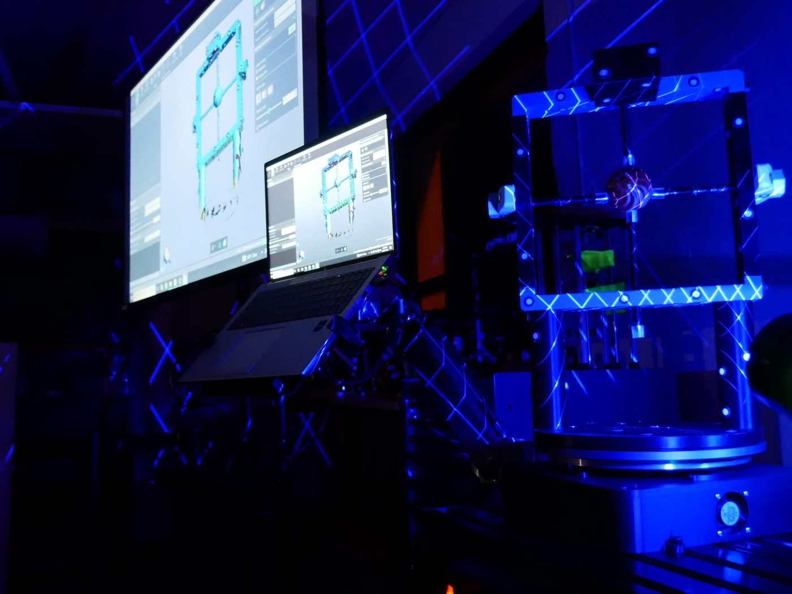
Fig. 03 — Scan station mid-cycle, live point cloud building on the monitors.
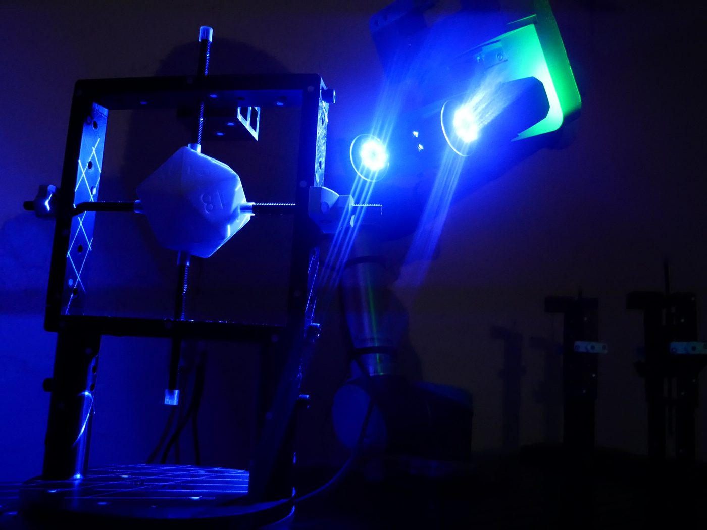
Fig. 04 — A frame seated on the rotating platform, scanner head alongside.
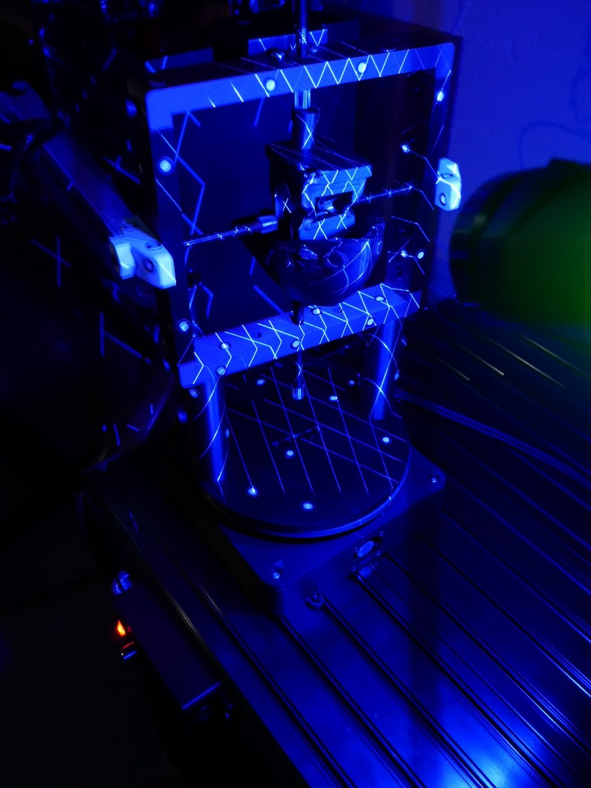
Fig. 05 — Structured-light pass across the part surface.
Fig. 06 — Early testing single part full demo video: the arm collects a frame, sets it on the rotating platform, scans it, and returns it. No tool change between handling and metrology.
Industry · Year-long co-op
MATS — Tracked Electric Construction Vehicle
Mechatronics Engineer · TRACKS North America · Nov 2023 – Dec 2024 · part-time, concurrent with capstone
MATS, the Mobile Asset Transport System, is a 1,000 lb, four-foot tracked electric machine. I worked
on the vehicle with the engineering team, and designed and built its wireless operator controller
myself: single-handed, long range, for running the machine from off it. I also assisted on the tether
controller, and on Wolverine, the company's line of radio-controlled hydraulic robots.
Platform
MATS, a 1,000 lb, 4 ft tracked electric construction vehicle
My scope
Wireless operator controller, designed and built individually; vehicle development and the tether controller with the engineering team
Also
Wolverine, the company's line of radio-controlled hydraulic robots
Environment
Field machines: dust, vibration, thermal cycling, hard use
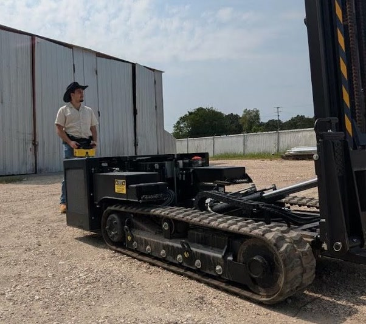
Fig. 07 — A Wolverine on site, run from a handheld radio controller.
Fig. 08 — MATS under tether control.
Industry · Year-long co-op
Desktop Board Repair Robot
Project Manager & Lead Engineer · BYRD Innovations · Nov 2022 – Aug 2023
I led the team that built a machine to repair computer mice: desolder, clean, and resolder any
combination of the encoder wheel and the button array, in about five minutes. It is a precision
manipulation problem with a thermal process running in the middle of it. I also supported the senior
team's companion machine, which finds and replaces surface-mount chips and heatsinks on digital
mining boards.
Process
Desolder → clean → resolder, fully automated
Targets
Encoder wheel and button array, any combination
Cycle time
~5 min per board
Tool head
Six working faces: paired flat-blade desoldering irons and a gripper on top, hot air and a through-hole vacuum nozzle underneath, parts loader and single-point resoldering iron on the sides
Extraction
Activated-charcoal fume fan over the work area; a cyclonic filter cools and collects spent solder
Self-clean
The resoldering iron brushes through a brass bristle array while a drop-down arm rotates brass rollers around the desoldering blades, ventilation running throughout
Electronics
Controller housing on the back face, power electronics in the base
Portability
Mouse PCBs are close to standardized, so moving between Dell, Razer, Logitech or Finalmouse is a config profile change rather than a retool
Role
Project manager and lead engineer, team of engineers
Companion system
Surface-mount chip and heatsink detection and replacement on digital mining boards
Repair cycle
Setup. Operator checks the machine for obstructions or damage, loads the board into
the centre fixture and a component cartridge into its holder, then plays the repair profile.
Home and calibrate. The robot homes and calibrates itself and the activated-charcoal
fume fan above it starts.
Desolder. The top front and back faces carry a pair of chopstick-style flat-blade
desoldering irons and a gripper. Each part removed drops down a discard chute.
Drop down.
Clean the board. The bottom front and back faces pair a hot air gun with a vacuum
nozzle that hooks over the board, blowing from one face while drawing solder through the
through-holes from the other into a cyclonic filter that cools and collects it.
Rotate the board 90 degrees.
Resolder. The left and right faces load new parts from the cartridge, then a
single-point iron and solder extruder lay down solder pin by pin.
Cool and rehome. The robot cools and returns home so the operator can safely remove
the repaired board and the spent cartridge, and clear waste every few cycles.
Fig. 09 — Full motion and staging demo.
Fig. 10 — Tool head and gantry. Printed brackets, linear rails and cable carriers on an extruded frame.
Fig. 11 — Full machine. Rotary stage at centre, board fixture beneath the head.
Diagnostics and repair
Robify Platform Repair
Robotics Consultant · Dr. Chenglin Wu's research lab at Texas A&M University
A new $80,000 Robify platform would not run out of the box, and the manufacturer was little help, so
Dr. Wu reached out and I agreed to take a look as a courtesy. Within a day on site with one of my
undergraduate researchers I got network access, the wheeled base and the arm working, then handed
over the repair sequence. The undergraduate stayed on, assisted the lab's researchers, and had the
platform fully functional by the end of that week. Dr. Wu thanked us both and offered him a paid
position in his lab to help cover his master's, working in partnership between the two labs.
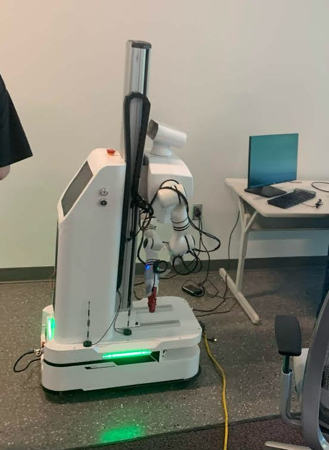
Fig. 12 — Robify platform under diagnosis.
Organization
Texas A&M ETID · Six seasons
Aggie Robotics
Officer, Vice President, President, then Graduate Advisor · Aug 2021 – Dec 2026
Roughly a hundred students, about fifty thousand dollars a year, several VEX U robots built in parallel,
and a competition calendar that does not move. I was made an officer in my first semester and came up
through vice president and president before taking the graduate advisor seat. VEX is the largest
robotics competition in the world and competing at the top of it is hard work. Nobody on the team is
paid. There is no bonus to motivate with and no paycheck anyone depends on, so every member is there
by choice. Everyone has classes and a life outside the org, so the job came down to keeping people
engaged and helping them balance the work with their courses. The only levers you have are scope,
schedule, and morale. It has been an honor and a privilege to watch these students grow, technically
as engineers and professionally into leaders themselves.
Scale
~100 students across multiple parallel build teams
Budget
~$50K/yr raised and managed through corporate and departmental sponsorship
Awards
Four VEX U World Championship awards in two years
2026
Design Award · A3 Safety Award
2025
Workforce Readiness, submitted on the RIPTIDE work · Energy
Method
Moved the org from waterfall planning to Agile sprints tracked in Notion
Outreach
1,000+ community volunteer hours; hosted regional HS/MS competitions as event lead
Fig. 13 — The team and all four robots at the VEX Robotics World Championship. Sponsor marks on the carts are the fundraising above, made visible.
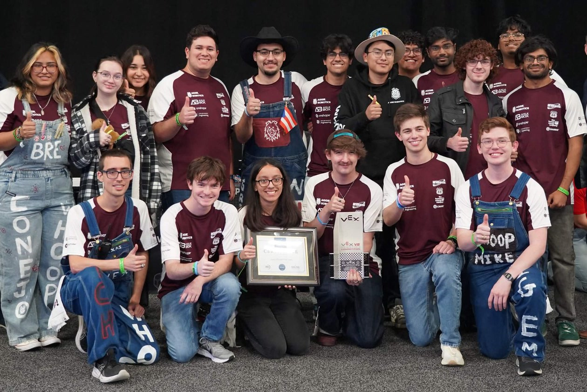
Fig. 14 — Collecting the A3 industry-sponsored Safety Award at Worlds.
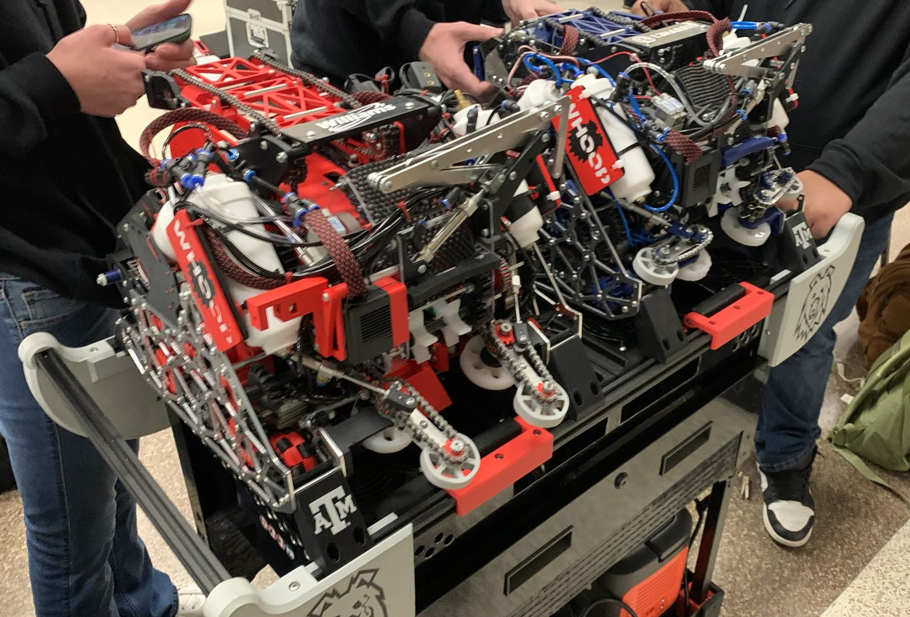
Fig. 15 — Two of the competition robots, staged on a custom robot cart between matches.
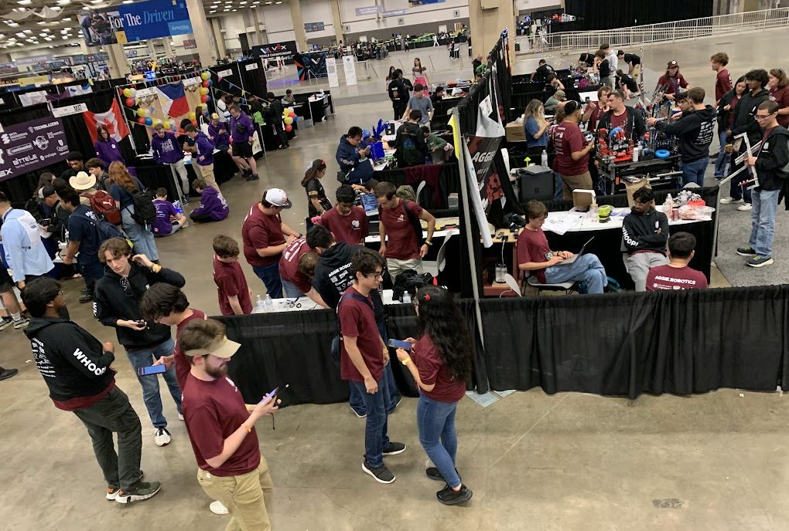
Fig. 16 — The pit, packed with members mid-event.
Texas A&M ETID · Six terms
Teaching Product Development
Graduate Teaching Assistant, ESET 333 under Professor Matthew Leonard · Jan 2025 – Dec 2026
I run the lab sections for the product development course: three or four sections a term, teams of
three to five students, carrying a product from industry research through design and documentation to
go-to-market strategies. Over six terms that is more than 300 undergraduate engineers. Teaching is one of
the parts of graduate school I have enjoyed most, and explaining these methods to new engineers every
term has sharpened how I use them myself.
Reach
300+ undergraduate engineers across four semesters and two summer terms
Format
3–4 lab sections per term, teams of 3–5
Curriculum
Industry research · context and functional block diagrams · work breakdown structures · responsibility assignment matrices · network logic diagrams · Gantt scheduling · reverse engineering · time value of money and cash flow · go-to-market · technical presentation
Now
Writing course rubrics and training the incoming graduate teaching assistants before I graduate
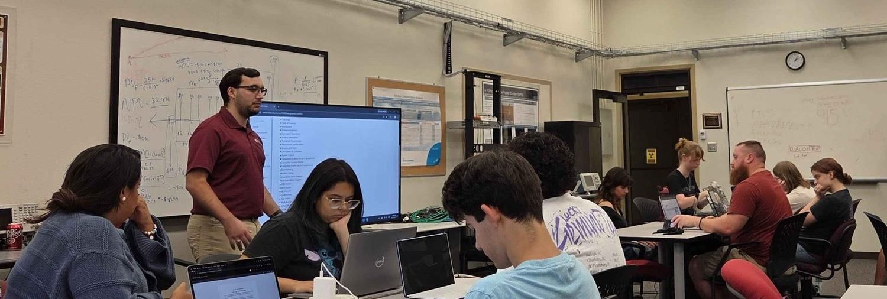
Fig. 17 — Lab section mid-explanation, working through project plans.
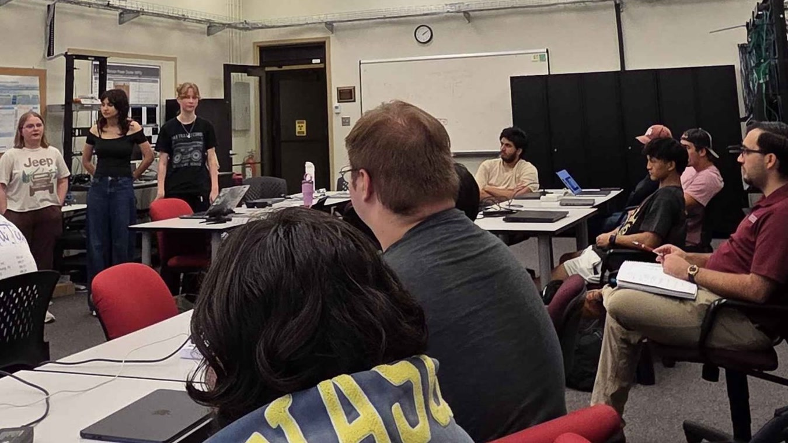
Fig. 18 — Team presentations. Every project is pitched to the room.
Capability
Methods and tools I have worked with, from the projects above and the graduate coursework behind them.
Motion & control
Model predictive control (MPC) · PID · MIMO nonlinear control · feedback linearization · Lyapunov stability · dynamic system simulation · path and motion planning · graph search (A*, Dijkstra) · obstacle avoidance · state estimation and localization · centimeter-level GPS · sensor fusion · hardware-in-the-loop testing
Power & energy
Hybrid battery / supercapacitor storage · power-split optimization · transient current and torque buffering · energy management strategy · power-draw telemetry and instrumentation
Perception & AI
PyTorch · CNN training and dataset labeling · object detection · edge GPU inference (Jetson Orin) · camera calibration · stereo depth and point clouds · SLAM and occupancy grid mapping
Software
C · C++ · Python · MATLAB / Simulink · ARM 64-bit assembly · Verilog HDL · ROS 2 · Linux · Git · object-oriented programming
Embedded & protocols
ARM architecture · Raspberry Pi · Arduino · ESP32 · TI development boards · PLC · digital logic · Multisim · power and motor control · serial protocols (UART, I2C, SPI) · PWM · ADC/DAC
Robot hardware
UR5 / PolyScope programming · forward and inverse kinematics · end-effector and gripper design · servo / stepper / BLDC drives · encoders · 3D scanning metrology (Creaform / VX) · hydraulic and pneumatic actuation
Oscilloscope · logic analyzer · multimeter · function generator · soldering and surface-mount rework · board-level diagnostics and repair · wiring and harnessing
Project management
Waterfall and Agile · Scrum and Kanban · sprint planning · backlog management · stand-ups · Gantt charts · work breakdown structure · responsibility assignment matrix · network logic diagrams · IDEF functional modeling · budget ownership · risk management · sponsor and stakeholder communication · Notion
Coursework
Graduate controls & AI
ENTC 689 Applied Control and Optimization · ENTC 689 Generative AI: Introduction and Applications · ENTC 641 Data Analysis, Simulation and Experimental Methods · STAT 651 Statistics in Research
Graduate project management
ENTC 629 Leadership and People Management in Technology Enterprises · ISEN 665 Management of Engineering Systems · ISEN 663 Engineering Management Control Systems
Undergraduate Mechatronics
ENTC 489 Robotic Systems Design · ESET 462 Control Systems · MXET 300 / 400 Mechatronics I & II · MXET 375 Applied Dynamic Systems · ESET 369 Embedded Systems Software · ESET 349 Microcontroller Architecture